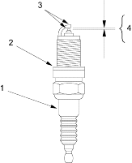
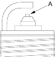
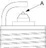

- Inspect the electrodes and ceramic insulator.
Burned or worn electrodes may be caused by:
- Advanced ignition timing
- Loose spark plug
- Plug heat range too hot
- Insufficient cooling
Fouled plug may be caused by:
- Retarded ignition timing
- Oil in combustion chamber
- Incorrect spark plug gap
- Plug heat range too cold
- Excessive idling/low speed running
- Clogged air cleaner element
- Deteriorated ignition coils

- Worn or deformed electrodes
- Damaged gasket
- Cranked Insulator
- Improper gap
Oil-fouling
Carbon deposits
Cranked centre electrode insulator
- Do not adjust the gap of platinum tip plugs (A); replace the spark plug if the gap is out of specification.
Electrode Gap:
Standard (New):1.0 - 1.1 mm (0.039 - 0.043 in.)
Service Limit:1.3 mm (0.05 in.)

- Replace the plug at the specified interval, or if the centre electrode is rounded (A). Use only the spark plugs listed below.
Spark Plugs:
| Engine Type | Spark Plug Type |
| D17A2, D17A8, D17A9 | ZFR6J-11 (NGK)
ZFR7J-11 (NGK) KJ20CR-L11 (DENSO) |
| D17A5 | BKR6E-N-11 (NGK)
BKR7E-N-11 (NGK) K20PR-L11 (DENSO) |

- Apply a small quantity of anti-seize compound to the plug threads and screw the plugs into the cylinder head finger-tight. Then torque them to 18 Nm (1.8 kgf/m, 13 lbf/ft).